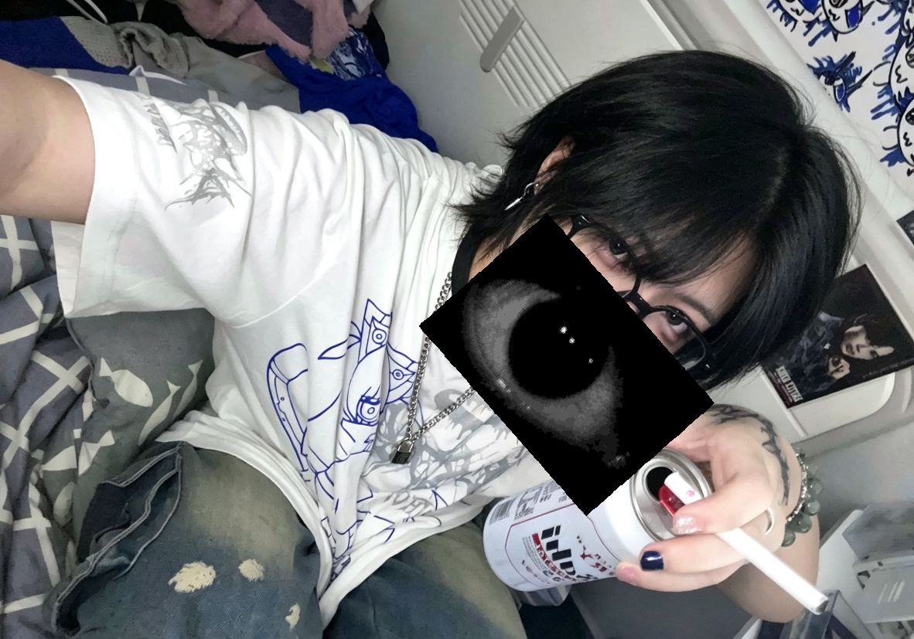

感觉你有点受欢迎了️👁️你朋友好多啊👁️跟他们绝交吧👁️我觉得你有我就够了👁️我会死死盯的着你的👁️你如果背叛了我👁️我不会原谅你..👁️我会死死地盯着你的👁️我会一直看着你👁️带着我的恨👁️一直看着你👁️我会一直看着你👁️永远看着你👁️我视奸你很累👁️你能自觉告诉我今天和谁天聊了吗👁️说了什么话👁️有没有想我，想了多少次👁️你有多少个朋友👁️你和他们都是怎么认识的👁️你为什么会和他们互相关注👁️你为什么要点赞他们的帖子👁️你能告诉我吗👁️你为什么不主动来找我👁️你的过往 童年 家庭 生活这些我全想知道👁️在认识我之前你认识谁👁️这些我也想知道👁️刚才跟讲你话的人是谁👁️我不是早就告诉过你不要跟别人玩了吗👁️你为什么还是不听我的👁️为什么每天都在跟别人玩不来找我👁️你知道我每天盯着聊天框等着新消息有多难受吗👁️为什么不来找我👁️是因为别人长得我比好看吗👁️你看腻了👁️还是觉得我性格不好👁️还是觉得我很烦👁️我明明已经努力憋着不烦你了👁️我一直在等着你给我发消息👁️为什么你却天天把我晾在一边你告诉我别的男的哪里比我好了👁️为什么你的眼里只有别人没有我👁️别人到底哪里比我好了👁️能不能别找人了👁️能不能别给我发别人跟你的聊天记录了👁️能不能别看那男的了👁️能不能别跟我提其他人了👁️你以前对我很好的👁️对我那么热情还会时刻关注着我跟我双向视奸还会说爱我👁️为什么现在只把好脸色留给别人看👁️别人就那么值得你喜欢吗👁️我到底哪里不如别人了👁️你能不能别惦记别人了我要捅死他们👁️我不是早就警告过你不要乱跟别人说话了吗👁️为什么你还是不听我的👁️为什么你每天都在跟别人一起聊天也不来找我👁️你知道我每天盯着聊天框等着新消息有多难受吗?为什么不来找我?沙了你沙了你沙了你沙了你沙了你沙了你沙了你沙了你沙了你沙了你沙了你沙了你沙了你沙了你沙了你沙了你沙了你
